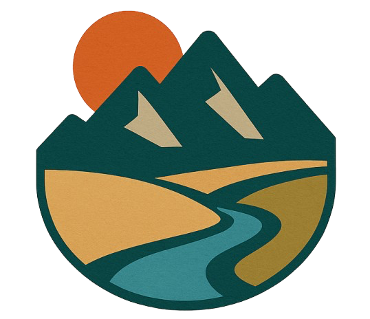
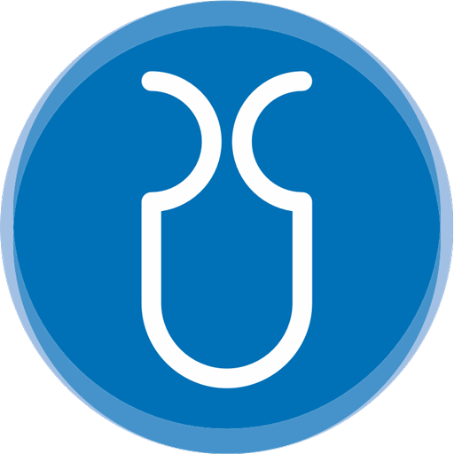

<!-- components.html -->
<!-- Top Logo Bar -->
<div id="logo-bar" style="display: flex; justify-content: space-between; align-items: center; padding: 10px 30px; background-color: #f9f9f9;">
  
  <!-- Left logos (with small gap) -->
  <div style="display: flex; align-items: center; gap: 10px;">
    <a href="index.html" style="margin: 0; padding: 0;">
      
    </a>
    <a href="index.html" style="margin: 0; padding: 0;">
      
    </a>
  </div>

  <!-- Right-side logos (keep spacing here) -->
  <div style="display: flex; align-items: center; gap: 20px;">
    <a href="index.html">
      
    </a>
    <a href="index.html">
      
    </a>
    <a href="index.html">
      
    </a>
    <a href="index.html">
      
    </a>
  </div>

</div>


<!-- Navigation Bar -->
<div id="shared-nav">
    <nav>
        <ul>
            <li><a href="index.html">Home</a></li>
            <li><a href="team.html">Team</a></li>
            <li><a href="news.html">News</a></li>
            <li><a href="case_studies.html">Case studies</a></li>
            <li><a href="data.html">Data</a></li>
            <li><a href="contact.html">Contact</a></li>
        </ul>
    </nav>
</div>

<div id="shared-footer">
    <footer>
        <p>&copy; 2025 Department of Water and Climate, Vrije Universiteit Brussel. All rights reserved.</p>
    </footer>
</div>